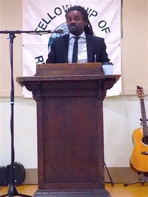

Friends,
As you know, this summer FOR-USA is excited to be hosting a Centennial Conference, celebrating our 100-year anniversary in conjunction with the annual Oregon FOR and Western Washington FOR peace conference in Seabeck, Washington, from July 1 to 4.
You can still register for the conference, which starts at just $75 for a single day, $180 for the weekend as a commuter, or $265 and up for those who wish to stay on site.
Welcoming young activists from around the country

FOR Bayard Rustin Fellow Rev. Osagyefo Sekou speaking at the 2015 Seabeck conference. |
One of our priorities this year was making sure that some of the vibrant youth and young-adult activism from around the country was represented at the Centennial Conference.
Oregon FOR kicked it off by dedicating $4,000 to funding scholarships for young activists to the conference -- and FOR-USA matched the funds, for $8,000 in total.
Eight thousand dollars in funding has allowed us to cover the conference costs of 30 different activists from around the country. We're so excited about facilitating this critical mass of FOR's next generation in one place, teaching and learning alike from each other and elders. This is truly the future of FOR!
However, our funds were not enough to cover the travel expenses for these activists, and that's where we need your help.
We want the Centennial Conference to be a welcoming space for everyone regardless of financial need.
 Make a donation to FOR-USA to cover the travel costs of these young activists to the Centennial Conference. Make a donation to FOR-USA to cover the travel costs of these young activists to the Centennial Conference.
Today, we'd like to share with you two activists who hope to join us in Seabeck -- with your help!
Nyle Fort
Nyle is a minister, organizer, and junior scholar from Newark, NJ. He has worked in the fields of education, criminal justice, and youth development for nearly a decade in various capacities including as youth pastor of First Baptist Church of Lincoln Gardens, an American Friends field worker at Union County Youth Prison, and an international fellow at the St. Andrew Centre in Southern India.
An activist committed to global transformative justice, Nyle brings his national experience and international lens to his local work.
Nyle traveled to Ferguson, MO to experience, learn from, and lend his hand to building the Movement for Black Lives. Upon his return home, Nyle created 7 Last Words: Strange Fruit Speaks. This black church liturgy commemorated the last words of African Americans killed by police and vigilantes, and generated events at The Riverside Church in New York City and Princeton Theological Seminary, among others. Nyle also created Newark Books and Breakfast, a monthly political education program providing free books and breakfast to local youth and families.
Most recently, Nyle traveled to Amsterdam and Antwerp as part of the International FOR multinational effort to challenge racialized violence. IFOR International Coordinator Rev. Lucas Johnson said of Nyle, "I gladly attest to his involvement in the movement, his capacity for critical reflection and his ability to wrestle deeply with the role of nonviolence as we find our way forward."
In addition to his organizing work, Nyle has spoken at various academic, cultural, and religious institutions including Harvard University, the University of Amsterdam, and the Malcolm X and Betty Shabazz Center. His writings are featured in several academic presses including Harvard Journal of African American Public Policy and Socialism and Democracy as well as various popular media outlets including The Nation, Ebony, The Guardian, the Huffington Post and more. He is currently a Ph.D student in Religion and African American Studies at Princeton University.
In short, we're thrilled to have Nyle's voice in Seabeck -- but we can only make it happen with your help.
Donate to FOR so we can bring Nyle Fort to the Centennial Conference.
Ayla Lopez
In her own words, Ayla writes:
I stand up for other youth who don't realize they have a voice.
Not a lot of youth in my San Bernardino, CA, community or high school think their voice matters, so I try and show them it does -- and that they do have a voice so they should use it. What I plan on getting out of the conference is more knowledge: 'go in smart, come out smarter.' It'd be a good learning experience for me, and what I learn I could share with the other youth in my community.
My current social justice passions deal with how youth in my community are being criminalized, Deferred Action for Childhood Arrivals (DACA) and Parent Accountability (DAPA) for the undocumented, ending the school-to-prison pipeline, mental health, and student rights.
I am a high school student who does feel criminalized at school. I do community organizing with the Inland Congregations United for Change, where I have helped work on changing the suspension policy in the San Bernardino school district. I am the president of the Students For Change club at my school, where students meet weekly to discuss the environment of school and what we would like to change.
Nearly two years ago I worked to help pass California Prop. 47, which is now the Safe Neighborhoods & Schools Act. This law helps people with felonies change their record to misdemeanors for low nonviolent offenses. This was an unforgettable and fun experience for me! I gained a lot of great relationships with passionate mentors in my community.
Donate to FOR so we can bring Ayla to the Centennial Conference.
Thank you for your support

I know we say this a lot, but we really can't do what we do in FOR without your support. Help us include the next generation of vital voices at this historic conference with your donation.
And thank you!
 Laurie Childers Laurie Childers
Chair, National Council
Fellowship of Reconciliation
|